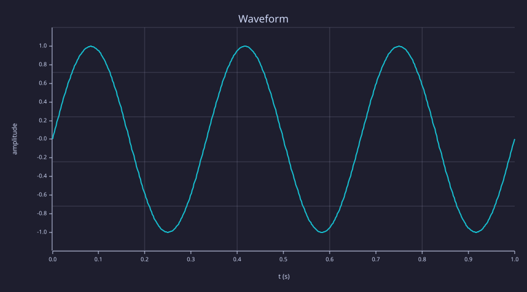

Waveform
These controls are not next to the cell, so they stay full-width bars.
The plot
A one-second waveform whose amplitude comes from the control above.

These controls are not next to the cell, so they stay full-width bars.
A one-second waveform whose amplitude comes from the control above.
